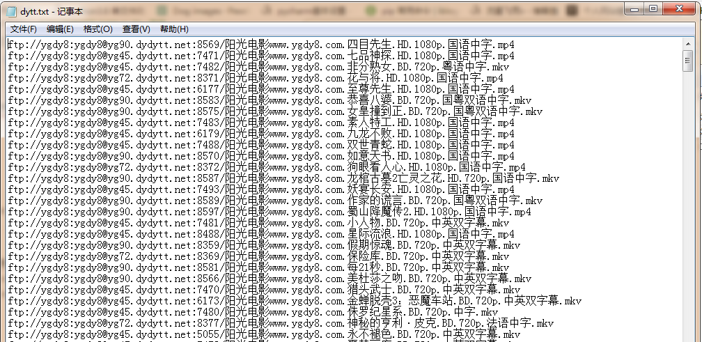

本文使用CrawlSpider方法爬取电影天堂网站内国内电影分类下的所有电影的名称和下载地址CrawlSpider其实就是Spider的一个子类。
CrawlSpider功能更加强大(链接提取器，规则解释器)
#CrawlSpider一些主要功能如下
#LinkExtractor()实例化了一个链接提取对象，链接提取器：用来提取指定的链接（url）
#allow参数：赋值一个正则表达式，链接提取器就可以根据正则表达式在页面中提取指定的链接
#提取到的链接全部交给规则解释器
#rules=（）实例化了一个规则解析器对象
#规则解析器接受了链接提取器发送的链接后，就会对这些链接发起请求，获取链接对应的页面内容，就会根据指定的规则对页面内容指定的数据进行解析
#callback：指定一个解析规则（方法，函数）
#follw：是否将链接提取器继续作用到链接提取器提取出的链接所表示的页面数据中
#LinkExtractor:设置提取链接的规则（正则表达式）
allow=()：设置允许提取的url
restrict_xpaths=():根据xpath语法，定位到某一标签下提取链接
restrict_css=():根据css选择器，定位到某一标签下提取链接
deny=():设置不允许提取的url（优先级比allow高)
allow_domains=():设置允许提取的url的域
deny_domains=():设置不允许提取url的域(优先级比allow_domains高)
unique=True:如果出现多个相同的url只会保留一个，默认为True
strip=True:自动去除url首位的空格，默认为True
process_links=None:可以设置回调函数，对所有提取到的url进行拦截
process_request=identity:可以设置回调函数，对request对象进行拦截
0，创建scrapy项目scrapy startproject dianyingtiantang
cd dianyingtiantang
#后面的网址先随便写，在程序里面改
scrapy genspider -t crawl dytt www.xxx.com1，items中定义爬取的字段import scrapy
class DianyingtiantangItem(scrapy.Item):
# define the fields for your item here like:
name = scrapy.Field()
movie_url = scrapy.Field()2，编写爬虫主程序
# -*- coding: utf-8 -*-
import scrapy
from scrapy.linkextractors import LinkExtractor
from scrapy.spiders import CrawlSpider, Rule
from dianyingtiantang.items import DianyingtiantangItem
class DyttSpider(CrawlSpider):
name = 'dytt'
# allowed_domains = ['www.xxx.com']
start_urls = ['https://www.ygdy8.net/html/gndy/china/index.html']
rules = (
Rule(LinkExtractor(allow=r'/html/gndy/jddy/(\d+)/(\d+).html'), callback='parse_item', follow=True),
)
def parse_item(self, response):
item = DianyingtiantangItem()
item['name'] = response.xpath('//td/p/text()|//div[@class="title_all"]/h1/font/text()').extract_first()
item['movie_url'] = response.xpath('//tbody/tr/td/a/@href|//tbody/tr/td/p/a/@href').extract_first()
yield item3，pipelines.py文件中编写永久性存储规则，写入mysql数据库和.txt文件
# 写入数据库
import pymysql
class DianyingtiantangPipeline(object):
conn = None
mycursor = None
def open_spider(self, spider):
self.conn = pymysql.connect(host='172.16.25.4', user='root', password='root', db='scrapy')
self.mycursor = self.conn.cursor()
def process_item(self, item, spider):
print(item['name'] + '：正在写数据库...')
sql = 'insert into dytt VALUES (null,"%s","%s")' % (
item['name'], item['movie_url'])
bool = self.mycursor.execute(sql)
self.conn.commit()
return item
def close_spider(self, spider):
print('写入数据库完成...')
self.mycursor.close()
self.conn.close()
# 写入.txt
class FilePipeline(object):
f = None
def open_spider(self,spider):
self.f = open('dytt.txt','a+',encoding='utf-8')
def process_item(self, item, spider):
print(item['name'] + '：正在写入文件...')
self.f.write(item['movie_url']+'\n')
return item
def close_spider(self,spider):
print('写入文件完成...')
self.f.close()4，settings.py文件中打开项目管道和设置请求头
ITEM_PIPELINES = {
'dianyingtiantang.pipelines.DianyingtiantangPipeline': 200,
'dianyingtiantang.pipelines.FilePipeline': 300,
}
USER_AGENT = 'Mozilla/5.0 (Windows NT 6.1; WOW64) AppleWebKit/537.36 (KHTML, like Gecko) Chrome/30.0.1599.101 Safari/537.36'5，运行爬虫程序
scrapy crawl dytt --nolog6，查看数据库和文件内是否下载成功

可以用迅雷下载器下载电影了，
done。